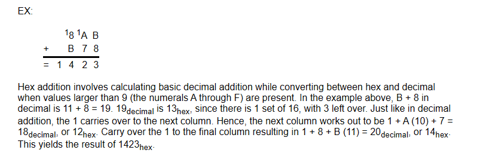
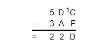
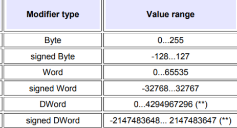
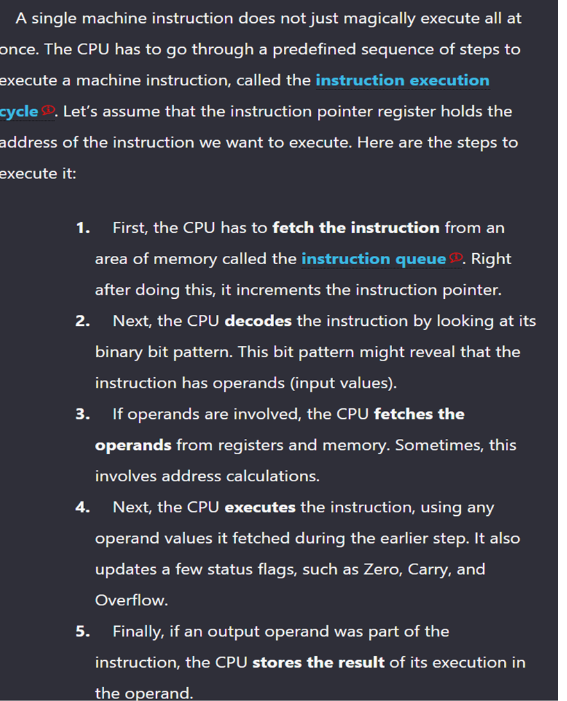

conversion
dec - > hex = dec / 16
hex to dec = hex * 16^n bit
arithmetics
add:
binary add
carry 1 when add 1 to 1
hex addiction

TWO compliments binary
flip all the 1 and 0 then add that negate binary with 1 to get the two compliment
Substraction
Binary substraction example A - B
we two compliment B and then A + (new)B
Hex substraction ( borrow 16 from right to do substraction and carry -1 when needed to )

TWO COMPLIMENTS HEX (15 - each value ) + 1 afterward
6A3D
+ 1
95C3
Singed decimal to hex
if decimal < 0
two complement hex to get singed hex
Singed Hex to Dec
if hex < 0, two compliment hex
and convert to dec
then add (-) singed at the dec

Byte 0 - > 2^8-1
singed Byte -2^7 - > 2^7-1
Word 2^16-1
Singed Word -2^15 -> 2^15
Dword 2^32
1. What is a Virtual machine and machine hierarchy.
Virtual machine is a software program that emulates the functions of some other physical or virtual computer. Depend on the layers but most common is
L0 for machine code
L1 for Digital logic
L2 for ISA (Instruction set architecture) built in instruction in the microprocessor
L3 is Assembly language
L4 is high level language
2. What is a dynamic link library (DLL).
a DLL is like a shared toolbox for computer programs, containing code and resources that different applications can use simultaneously, helping to save space, resources, and making maintenance easier.
3. How does a compiler decode and execute instructions.

4. Evaluate Boolean expressions with AND, OR, NOT.